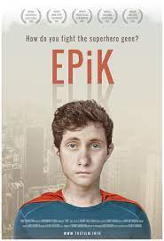
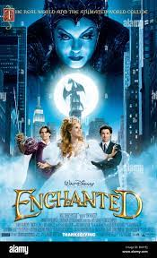
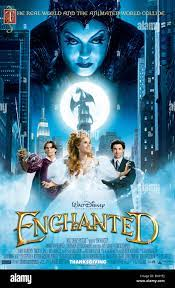

PONNIYIN SELVAN
⭐⭐⭐⭐ ⭐ 2022 Action/War
THE RAISE OF CHOLA EMPIRE Duration:2h 40m
Ponniyin Selvan: I (transl. The Son of Ponni) is a 2022 Indian Tamil-language epic historical action drama film directed by Mani Ratnam.
- Play
- My play list
Continue Watching
 
